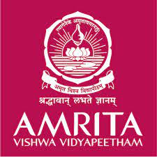

- Amrita Vishwa Vidyapeetham, Coimbatore
A.I.R 5 - MANIPAL University
A.I.R 7
- VIT Vellore - Vellore Institute of Technology
A.I.R 9
- BITS Pilani - Birla Institute of Technology and Science
A.I.R 18
- Amity University, Noida
A.I.R 22
University of Petroleum and Energy Studies (UPES) was established in 2003 through the UPES Act, 2003 of the State Legislature of Uttarakhand. The university is approved by the University Grants Commission (UGC). The varsity is a member of the Association of Indian Universities (AIU). It is also known as UPES Dehradun. The campus of the varsity is spread over an area of 44 acres. There are a total of 561 faculty members at the university. As per the official website, UPES Dehradun's mission is to develop industry-focused professionals. UPES have many perks like International credit transfer to The University of Queensland, Australia for B. Tech. students Study abroad opportunity at Berkeley Global 50% Scholarship for PG courses in international Universities affiliated to UPES

Amity University Noida is a private state university established in the year 2005. Amity University is recognised by the University Grants Commission (UGC). The National Assessment and Accreditation Council (NAAC) has accredited the varsity with an A+ grade. The campus of Amity University Noida is spread over an area of 1000 acres. It has a total of 1727 faculty members and the total student enrollment is 43944. Amity University Noida is ranked at 31st position in the engineering category, 29th in the management category, 11th in the pharmacy category and 43rd position in the overall category in NIRF Ranking 2021.

Birla Institute of Technology and Science, Pilani (BITS Pilani) was established in association with Massachusetts Institute of Technology (MIT), USA as a deemed to be university. The institute has its campuses across Pilani, Goa, Hyderabad and Dubai. The BITS Pilani campus is spread over an area of 328 acres of land. Birla Institute of Technology and Science, Pilani is accredited by the National Assessment and Accreditation Council (NAAC) with grade A. As per the NIRF Ranking 2021, BITS Pilani is ranked at 3rd position in the Pharmacy category, 26th in the Engineering category and 17th in the university category.